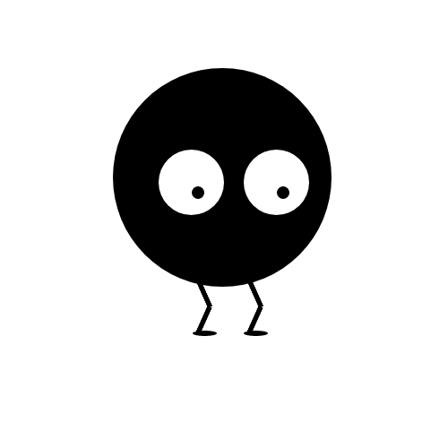

- open XD
- create a new custom artboard that is 500px by 500px
- create a black circle (using ellipse tool) that is 244px by holding down shift
- place black circle at x:126 y:76
- uncheck border box on black circle
- create white circle in same way as black circle but 73px
- remove border on white circle
- place white circle at x:177 y:167
- create another black circle in same manner at 14px and remove border
- place black circle at x:214 y:208
- click 14px black circle, hold down shift key, and click 73px white circle
- command+G on mac or control+G on pc to group
- command+c and command+v on mac or control+c or control+v on pc to copy and paste
- select pasted shape and place at x:272 y:167
- use line tool to create black shape (w:13 h:29 x:221.5 y:313.5 border size:5
- copy and paste black line
- select pasted black line and go to object>transform>flip vertically
- place transformed line at x:221 y:342.5
- using ellipse tool, create black shape with no border (w:27 h:6 x:215 y:369)
- select last three shapes and group
- copy and paste group and place at x:272 y:313.5
- go to file>export>all artboards...
- save as png, export for design, and export all artboards
- send png file to ahoang6@gmu.edu
Programmer

Computer